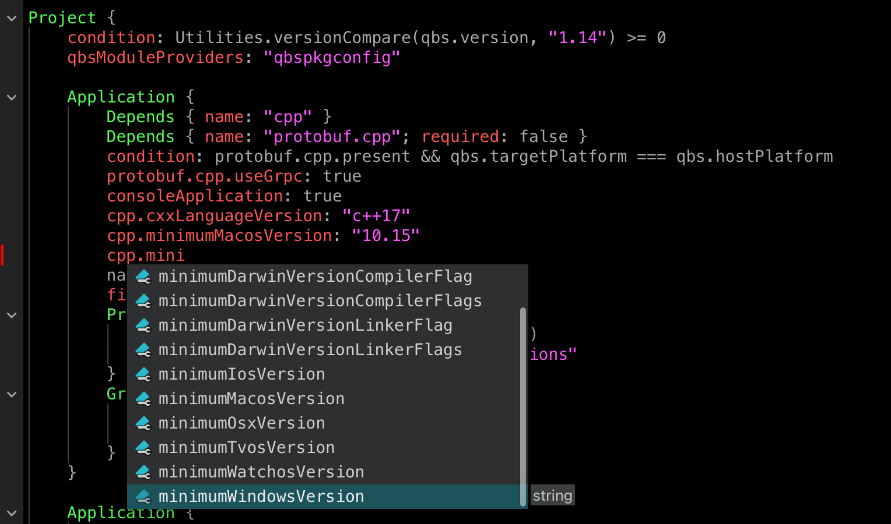

The Qbs build tool version 2.3.0 is available.
What’s new
As hinted at last time, the main feature in this release is the use of the new Language Protocol Server for “go to definition” in certain contexts and auto-completion.
Language Protocol Server
We have added a Language Protocol Server to Qbs which provides IDE-agnostic tooling (https://microsoft.github.io/language-server-protocol). On top of it, we added the “go to definition” feature to QtCreator - it is now possible to open source files from *.qbs files by simply pressing F2. We have also added support for autocompletion of the module properties:

General
We have added a possibility to export products to CMake via the new Exporter.cmake module. This allows to use libraries built with Qbs directly with CMake projects without the need to use an intermediate representation in form of the Exporter.pkgconfig.
We deprecated the “fallback” module
provider in favor of
the qbspkgconfig provider.
In Qbs, module providers generate missing modules during the project configuration (“resolve”)
stage. Historically, we had only Qt and “fallback” module providers and there was no way to control
which providers are run until we introduced “named” module providers in
Qbs 1.21. At the same time, we’ve added the
qbspkgconfig provider that reads .pc files directly, avoiding expensive invocations of the
pkg-config tool. Since then, we had two almost identical providers that work on top of .pc files.
However, the problem with the “fallback” provider is that it works differently from other
providers as well as suffers performance issues and has the same bugs as the pkg-config tool.
Thus, we decided to deprecate the “fallback” provider in Qbs 2.3.0 and remove it in Qbs 2.4.0.
For details on how to use the qbspkgconfig provider, see the
provider page in the documentation.
Also, please report any bugs in the qbspkgconfig to the
bug tracker.
We have added a new Tutorial section in the documentaion to make it easier to grasp core concepts and make users familiar with best practices. Also, we added a new example on how to use Exporter modules.
If a project needs to be re-resolved, we now print the reason. Also, we rewrote the wildards handling to track changes more accurately.
C/C++ Support
We fixed an issue with complex project structure that lead to a non-linear algorithm during traversing of the dependencies. Now, private dependencies (dependencies of static libraries) of products are not traversed more than once anymore (QBS-1714).
Language
- Module properties are now accessible for groups in modules (QBS-1770).
- The qbspkgconfig.mergeDependencies property was removed. This feature only existed because of performance limitations which were fixed in Qbs 2.1.0.
- ModuleProviders now support the allowedValues property of the PropertyOptions item (QBS-1748).
Try it
Qbs is available for download on the download page.
Please report issues in our bug tracker.
Join our Discord server for live discussions.
You can use our mailing list for questions and discussions.
The documentation and wiki are also good places to get started.
Qbs is also available from a number of package repositories (Chocolatey, MacPorts, Homebrew) and is updated on each release by the Qbs development team. It can also be installed through the native package management system on a number of Linux distributions. Please find a complete overview on repology.org.
Qbs 2.3.0 is also included in Qt Creator 13.0.0.
Contribute
If You are a happy user of Qbs, please tell others about it. But maybe you would like to contribute something. Everything that makes Qbs better is highly appreciated. Contributions may consist of reporting bugs or fixing them right away. But also new features are very welcome. Your patches will be automatically sanity-checked, built and verified on Linux, macOS and Windows by our CI bot. Get started with instructions in the Qbs Wiki.
Thanks to everybody who made the 2.3 release happen:
- Christian Kandeler
- Dmitrii Meshkov
- Ivan Komissarov
- Raphael Cotty
- Richard Weickelt